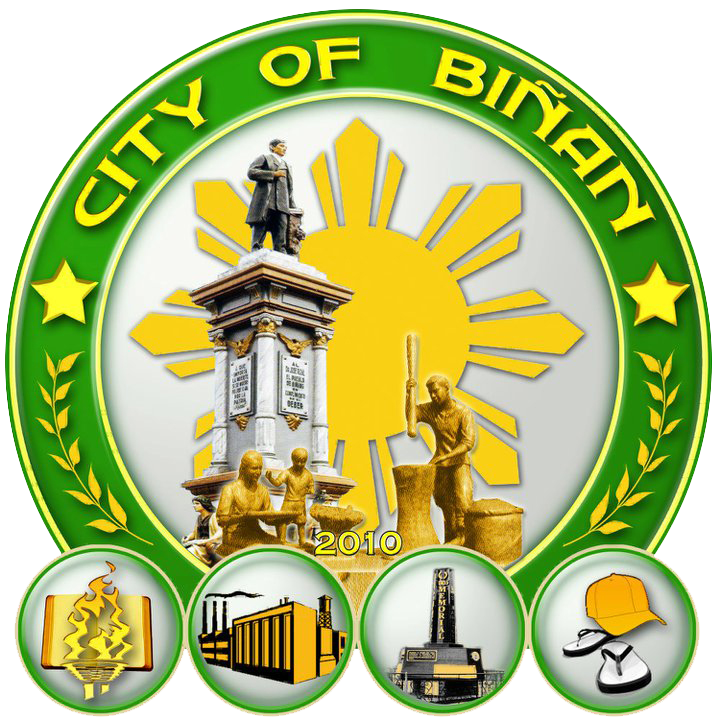
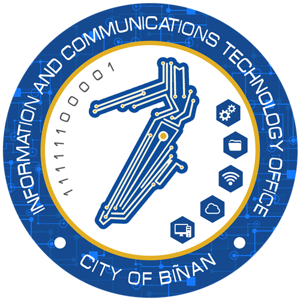

INTERNSHIP AT CITY GOVERNMENT OF BINAN
FULL REPORTCompany Overview

The City Hall of Biñan in Laguna serves as the central administrative hub of the city, housing key government offices, service departments, and facilities that manage local governance, public welfare, and community development. It is located near historic landmarks such as the School of Dr. Jose P. Rizal Site and Museum, making it both a civic and cultural center.

The Information and Communications Technology Office (ICTO) serves as the City’s digital innovation arm, supporting technology-driven initiatives that improve public service delivery, internal operations, and citizen engagement. During my practicum, I experienced how the office helps advance the City’s digital transformation efforts through modern tools, systems, and strategic IT solutions.
Nature of Work
As part of the development team assigned to the Information and Communication Technology Office (ICTO), we were given the task of developing a web-based system for the City Social Welfare and Development Office (CSWDO). The system was created to support data entry, record management, and the processing of Biñan Access Card information.
The project focused on helping CSWDO manage beneficiary records more efficiently, especially for distributing government programs and assistance to qualified residents. Through the system, authorized personnel could encode, update, search, and verify citizen information in a centralized platform. This helped reduce manual paperwork, improve record accuracy, and make the distribution of services and assistance more organized.
Our development team worked on the planning, design, and implementation of the website, including user-friendly data entry forms, beneficiary profiling, record searching, and information validation. We also considered the daily workflow of CSWDO staff to ensure that the system would be practical, accessible, and useful for public service operations.
This experience gave us valuable exposure to collaborative software development, database-driven web applications, and the creation of digital solutions that support social welfare services and local government programs.
Total Hours Rendered
I began my practicum at the City Government of Biñan on April 20, 2026. As of July 10, 2026, I have completed 400 hours of the required 486 practicum hours. The remaining 86 hours will be dedicated to completing assigned development tasks, supporting ongoing system improvements, assisting with testing and documentation, and continuing to gain practical experience within the Information and Communication Technology Office (ICTO).
Conclusion
Overall, my ongoing practicum at the City Government of Biñan has been a meaningful and valuable learning experience. As part of the development team assigned to the Information and Communication Technology Office (ICTO), I have contributed to the development of a web-based system for the City Social Welfare and Development Office (CSWDO). This work has strengthened my understanding of collaborative software development, database-driven applications, and the role of technology in improving government services and office operations.
As of July 10, 2026, I have completed 400 of the required 486 practicum hours. The remaining 86 hours will allow me to continue supporting system development, testing, documentation, and improvements based on the needs of CSWDO personnel. Through the remainder of the practicum, I aim to further develop my technical skills, professional discipline, teamwork, communication, and readiness for future employment in information technology and system development.